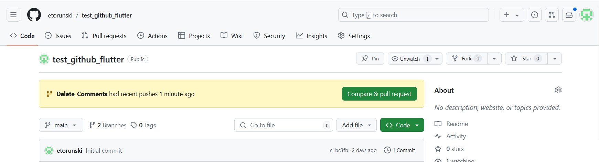
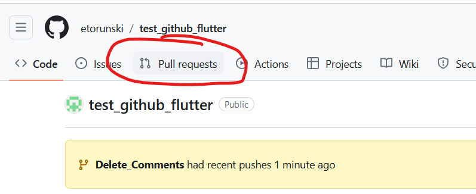
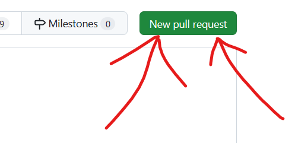
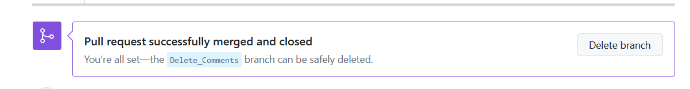
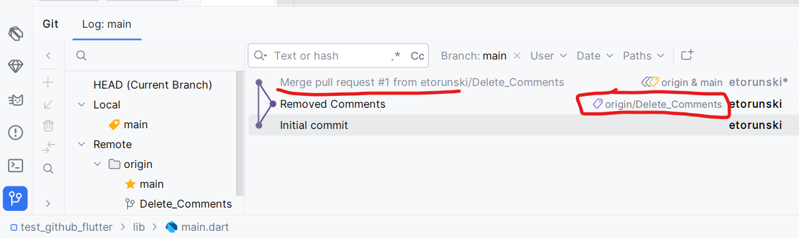

Look at your repository now on Github:

The picture shows that you just pushed your branch and asks if you want to "Compare & pull request". This button is the easy way to do it, but that button will not always be there so we'll show the consistent way to do a pull request. Click on the "Pull Requests" tab at the top.

Then click on "New pull request":
Then select the branch that you just pushed. The arrow shows that the changes you pushes will go to the Main branch. Then click on the "Create Pull Request" button. Lower on the page should show all the red lines showing the removed comments. Click again on the "Create Pull Request" button. At each step, you are looking for the Green button for you to be able to proceed. The next page should show you that there are no conflicts and you are able to merge your changes onto the Main branch. Click on the green button "Merge pull request", and then again on the green "Confirm merge". Now that you have merged your changes, you should see that your merge was successful. You don't need the branch anymore so you should delete it by clicking on the "Delete branch" button.
You should also delete your branch from your computer since it has served its purpose. On your computer, go to your main branch by typing: git checkout main. Then delete your previous branch by typing: git branch -D Delete_Comments. The -D parameter means delete. Your changes should be removed on your computer but they have been merged on the Remove Github repository. To bring those changes to your computer, type: git pull. In your main.dart file, you should see that your comments have been removed. In AndroidStudio, click on the Git tab and you should see graphically what happened:
1) Whenever you implement a new feature, you should pull the latest code from the server onto your main branch on your computer.
This makes sure that you have the latest code from your team and that you are incorporating their changes into the code.
2) Then you should create a new branch that will keep the commits for this new feature that you are creating.
3) Once you are done at it works, you commit your changes and push to the server.
4) You create a Pull Request on the server to merge your code.
5) You merge your pull request and then delete your branch on Github.
6) You checkout your main branch on your computer and delete the branch you had created. You then pull those changes onto
your main branch from Github.